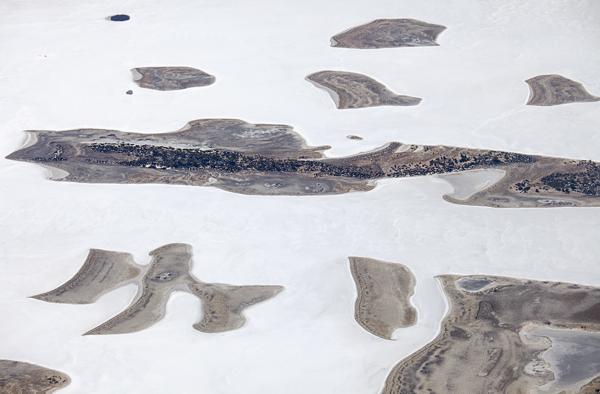

"The Australian landscape has always appealed to me. There is something about it— its spaciousness,
its character, the light and its uniqueness. I have a preference for the aerial perspective,
and each flight becomes a flight of discovery as landscapes tell us about their natural history
and reveal their evolution."

Above: Islands on natural salt lake, Lake Johnston, north of Esperance, in Western Australia.
(Taken 2014)
"I have been attracted to the Australian landscape because of its size and subtle differences —
a sense of wonderment, how it all came about, the evolution of the landscape. Like the rest of
the world it has gone through many stages to be what it is today — uniquely Australian.
But it also is a very old landscape. It is the flattest and driest continent,
which compared with other countries, does not manifest itself in grandeur as we know it;
large rivers, large mountains and the dramatic changes of the seasons."
 Marcia's Blog
Marcia's Blog